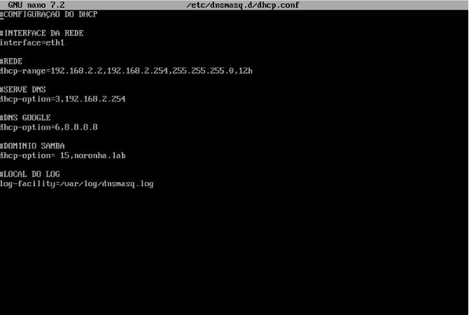
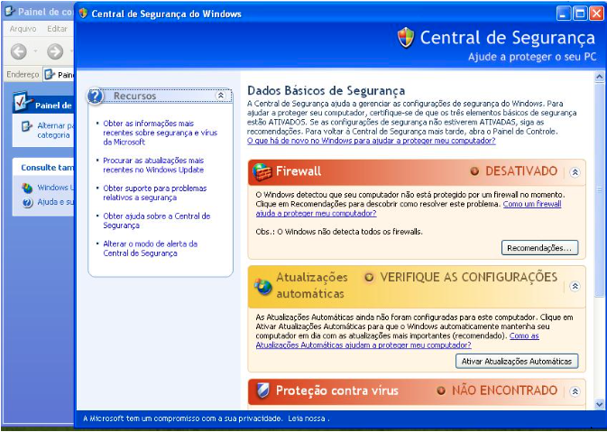
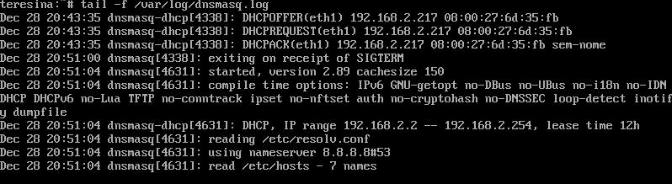
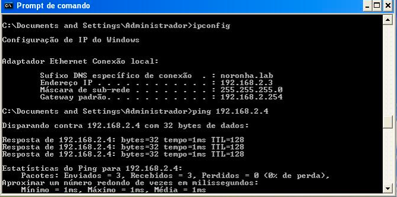

DHCP
AVALIAÇÃO
Incluir o(s) nome(s) e o conteúdo do(s) arquivo(s) de configuração.
- Distribuir um intervalo (range em inglês) de endereços IP; (15 pontos)
- Reservar 2 endereços (IP fixo) fora do intervalo do item anterior. (5 pontos)
Instalação
Instalando o "DNSMASQ" na maquina "Xarope" para rodar na maquina.
Comando: sudo apt install DNSMASQ
Após a instalação do DNSMASQ, precisamos subir o serviço no linux.
Caso você esteja usando o ubuntu use:
comando: systemctl dnsmasq start
Caso você esteja usando o alpine ou semelhante use:
comando - service dnsmasq start
O terminal mostrará dnsmasq rodando no sistema.
Agora você precisará entrar no diretório /etc/dnsmasq.d e criar um arquivo de configuração do serviço.
comando - touch dhcp.conf
Dentro do arquivo dhcp.conf, coloque as configurações. Ela tem que ficar desse modo:
#CONFIGURAÇÃO DO DHCP
#INTERFACE DA REDE
. interface=eth1
. dhcp-range=192.168.2.2,192.168.2.254,255.255.255.0,12h
#SERVE DNS
. dhcp-option=3,192.168.2.254
#DNS GOOGLE
. dhcp-option=3,8.8.8.8
#DOMINIO SAMBA
. dhcp-option=15,noronha.lab
#LOCAL DO LOG
. log-facility=/var/log/dnsmasq.log
#IPS FIXO POR MAC
. dhcp-host=08:00:27:B5:E1:71,192.168.2.3
. dhcp-host=08:00:27:6D:35:FB,192.168.2.4

Configurando a maquina windows:
- No windows, clique no menu "iniciar"
- Com esse comando você poderar acompanhar o log.
- Após isso, entre no "painel de controle"
- Dentro do "painel de controle" procure "Conexões de rede"
- Vai aparecer um simbolo com o nome "Conexão local"
- Clicando nela, Você entra em propriedades, e clica na opção de protocolo.
- Nisso voce troca a opção de ip fixo para dhcp
OBS: precisa delisgar o firewall para conseguir pingar

Fazendo o teste de ping com ip fixo:
Ping 192.168.2.3
Ping 192.168.2.4
LOG
ONDE ENCONTRAR O LOG DO DNSMASQ
comando - tail -f /var/log/dnsmasq.log

Teste
